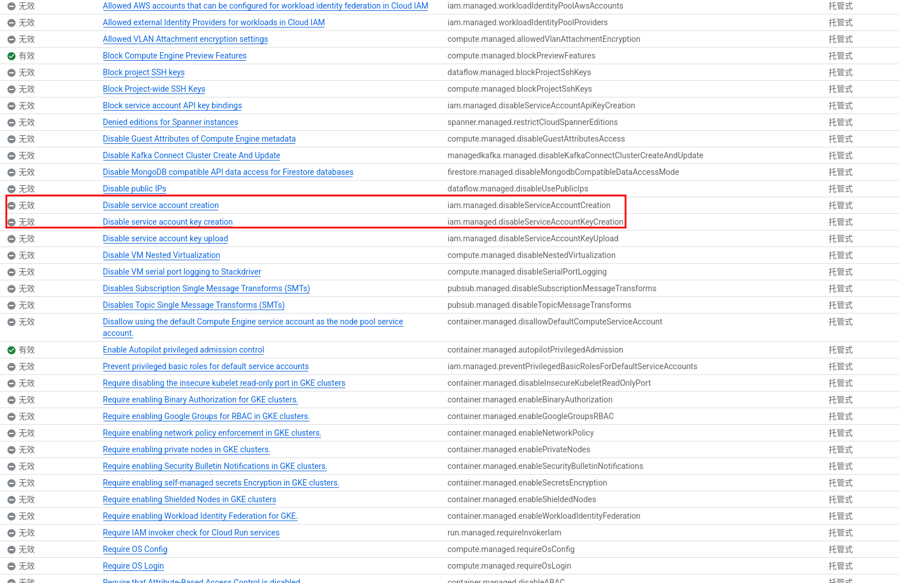

一、关于Banana-slides
1.基本介绍
Banana-slides是一个基于原生AI PPT生成应用，能够在几分钟内从想法到演示文稿， 无需繁琐排版，可以通过口头描述修改，实现真正的Vibe PPT。 具备文本图片自动提取，素材上传和自然语言修改功能。
2.资源链接
- 项目链接:https://github.com/Anionex/banana-slides
- 使用案例：https://github.com/Anionex/banana-slides/issues/2
- 从0开始部署:https://github.com/ShellMonster/banana-slides/blob/docs-deploy-tutorial/docs/NEWBIE_DEPLOYMENT.md
二、 Banana功能介绍
1. 灵活多样的创作路径
支持想法、大纲、页面描述三种起步方式，满足不同创作习惯。
- 一句话生成：输入一个主题，AI 自动生成结构清晰的大纲和逐页内容描述。
- 自然语言编辑：支持以 Vibe 形式口头修改大纲或描述（如"把第三页改成案例分析"），AI 实时响应调整。
- 大纲/描述模式：既可一键批量生成，也可手动调整细节。
2. 强大的素材解析能力
- 多格式支持：上传 PDF/Docx/MD/Txt 等文件，后台自动解析内容。
- 智能提取：自动识别文本中的关键点、图片链接和图表信息，为生成提供丰富素材。
- 风格参考：支持上传参考图片或模板，定制 PPT 风格。
3. "Vibe" 式自然语言修改
不再受限于复杂的菜单按钮，直接通过自然语言下达修改指令。
- 局部重绘：对不满意的区域进行口头式修改（如"把这个图换成饼图"）。
- 整页优化：基于 nano banana pro🍌 生成高清、风格统一的页面。
4. 开箱即用的格式导出
- 多格式支持：一键导出标准 PPTX 或 PDF 文件。
- 完美适配：默认 16:9 比例，排版无需二次调整，直接演示。
5. 可自由编辑的pptx导出（Beta迭代中）
- 导出图像为高还原度、背景干净的、可自由编辑图像和文字的PPT页面
- 相关更新见 https://github.com/Anionex/banana-slides/issues/121
注：随着新功能添加,对比可能过时
三、Banana Docker本地部署
Banana slides 最简单的部署方式是使用Docker Compose 🐳，快速启动前后端服务。
1. 系统要求
📒 Windows/Mac用户说明
如果你使用 Windows 或 macOS，请先安装 Docker Desktop，并确保 Docker 正在运行（Windows 可检查系统托盘图标；macOS 可检查菜单栏图标），然后按文档中的相同步骤操作。
提示：如果遇到问题，Windows 用户请在 Docker Desktop 设置中启用 WSL 2 后端（推荐）；同时确保端口 3000 和 5000 未被占用。
Linux 用户说明
使用 Linux，只需要先安装docker即可。要求和Windows类似
2.代码获取
- 代码复制
git clone https://github.com/Anionex/banana-slides
cd banana-slides
- 拉取并部署镜像
# 在项目目录下运行镜像
docker compose up -d
3.前端和后端访问链接:
https://localhost:3000 #前端
https://localhost:5000 #后端
3. API获取和配置
Banana-slides 支持 gemini 和 Open AI标准格式的API密钥。支持的API格式
| API 格式 | 适用平台 | 图片生成 | 分辨率设置 |
|---|---|---|---|
| Gemini 格式 | Google Gemini、AIHubMix、本地 Ollama 等 | ✅ 支持 | ✅ 可选 1K/2K/4K |
| OpenAI 格式 | OpenAI、其他兼容平台、本地 vLLM 等 | ⚠️ 取决于平台 | ❌ 固定分辨率 |
其他兼容平台和中转可以参考
4. 网页运行
- 启动docker 服务
docker compose up -d
启动成功预计输出
[+] Running 3/3
✔ Network banana-slides-network Created
✔ Container banana-slides-backend Started
✔ Container banana-slides-frontend Started
- 打开浏览器并访问网页
https://localhost:3000
原笔记此处的配图暂缺。
网页设置中只需填写以下三项：
| 配置项 | 说明 | 填写示例 |
|---|---|---|
| API 格式 | 选择 Gemini 格式 或 OpenAI 格式 |
Gemini 格式（推荐） |
| API Base | API 服务地址（参考下方填写规则） | https://aihubmix.com/gemini |
| API Key | 你获取的 API 密钥 | AIzaSy... |
💡 兼容性说明：只要是兼容标准 OpenAI v1 或 Gemini v1beta 格式的 API 服务都可以使用：
- 云端服务：AIHubMix、Google Gemini、OpenAI 等
- 本地服务：Ollama、vLLM、LocalAI 等本地部署的模型服务
API Base 填写规则：
| 使用场景 | API 格式 | API Base 填写示例 |
|---|---|---|
| AIHubMix（推荐） | Gemini 格式 | https://aihubmix.com/gemini ✅ 需要包含 /gemini 路径 |
| Google 官方 | Gemini 格式 | https://generativelanguage.googleapis.com ⚠️ 不要加 /v1beta |
| 本地 Ollama | Gemini 格式 | http://localhost:11434 ⚠️ 不要加 /v1beta |
| AIHubMix | OpenAI 格式 | https://aihubmix.com/v1 ✅ 需要加 /v1 |
| OpenAI 官方 | OpenAI 格式 | https://api.openai.com/v1 ✅ 需要加 /v1 |
| 本地 vLLM | OpenAI 格式 | http://localhost:8000/v1 ✅ 需要加 /v1 |
⚠️ 重要提示：
- AIHubMix Gemini 格式的 API Base 需要填写完整路径
https://aihubmix.com/gemini- Google 官方 Gemini 格式只需填写域名，不要在后面添加
/v1beta，系统会自动拼接- OpenAI 格式的 API Base 需要填写完整路径，例如
https://api.openai.com/v1- 本地服务确保已启动，地址格式为
http://localhost:端口号
四、使用技巧
参考教程:https://github.com/ShellMonster/banana-slides/blob/docs-deploy-tutorial/docs/NEWBIE_DEPLOYMENT.md
使用案例:https://github.com/ShellMonster/banana-slides/blob/docs-deploy-tutorial/docs/TUTORIAL_SLIDES.md
五、 技术架构
前端技术栈
- 框架：React 18 + TypeScript
- 构建工具：Vite 5
- 状态管理：Zustand
- 路由：React Router v6
- UI组件：Tailwind CSS
- 拖拽功能：@dnd-kit
- 图标：Lucide React
- HTTP客户端：Axios
后端技术栈
- 语言：Python 3.10+
- 框架：Flask 3.0
- 包管理：uv
- 数据库：SQLite + Flask-SQLAlchemy
- AI能力：Google Gemini API
- PPT处理：python-pptx
- 图片处理：Pillow
- 并发处理：ThreadPoolExecutor
- 跨域支持：Flask-CORS
六、项目结构
banana-slides/
├── frontend/ # React前端应用
│ ├── src/
│ │ ├── pages/ # 页面组件
│ │ │ ├── Home.tsx # 首页（创建项目）
│ │ │ ├── OutlineEditor.tsx # 大纲编辑页
│ │ │ ├── DetailEditor.tsx # 详细描述编辑页
│ │ │ ├── SlidePreview.tsx # 幻灯片预览页
│ │ │ └── History.tsx # 历史版本管理页
│ │ ├── components/ # UI组件
│ │ │ ├── outline/ # 大纲相关组件
│ │ │ │ └── OutlineCard.tsx
│ │ │ ├── preview/ # 预览相关组件
│ │ │ │ ├── SlideCard.tsx
│ │ │ │ └── DescriptionCard.tsx
│ │ │ ├── shared/ # 共享组件
│ │ │ │ ├── Button.tsx
│ │ │ │ ├── Card.tsx
│ │ │ │ ├── Input.tsx
│ │ │ │ ├── Textarea.tsx
│ │ │ │ ├── Modal.tsx
│ │ │ │ ├── Loading.tsx
│ │ │ │ ├── Toast.tsx
│ │ │ │ ├── Markdown.tsx
│ │ │ │ ├── MaterialSelector.tsx
│ │ │ │ ├── MaterialGeneratorModal.tsx
│ │ │ │ ├── TemplateSelector.tsx
│ │ │ │ ├── ReferenceFileSelector.tsx
│ │ │ │ └── ...
│ │ │ ├── layout/ # 布局组件
│ │ │ └── history/ # 历史版本组件
│ │ ├── store/ # Zustand状态管理
│ │ │ └── useProjectStore.ts
│ │ ├── api/ # API接口
│ │ │ ├── client.ts # Axios客户端配置
│ │ │ └── endpoints.ts # API端点定义
│ │ ├── types/ # TypeScript类型定义
│ │ ├── utils/ # 工具函数
│ │ ├── constants/ # 常量定义
│ │ └── styles/ # 样式文件
│ ├── public/ # 静态资源
│ ├── package.json
│ ├── vite.config.ts
│ ├── tailwind.config.js # Tailwind CSS配置
│ ├── Dockerfile
│ └── nginx.conf # Nginx配置
│
├── backend/ # Flask后端应用
│ ├── app.py # Flask应用入口
│ ├── config.py # 配置文件
│ ├── models/ # 数据库模型
│ │ ├── project.py # Project模型
│ │ ├── page.py # Page模型（幻灯片页）
│ │ ├── task.py # Task模型（异步任务）
│ │ ├── material.py # Material模型（参考素材）
│ │ ├── user_template.py # UserTemplate模型（用户模板）
│ │ ├── reference_file.py # ReferenceFile模型（参考文件）
│ │ ├── page_image_version.py # PageImageVersion模型（页面版本）
│ ├── services/ # 服务层
│ │ ├── ai_service.py # AI生成服务（Gemini集成）
│ │ ├── file_service.py # 文件管理服务
│ │ ├── file_parser_service.py # 文件解析服务
│ │ ├── export_service.py # PPTX/PDF导出服务
│ │ ├── task_manager.py # 异步任务管理
│ │ ├── prompts.py # AI提示词模板
│ ├── controllers/ # API控制器
│ │ ├── project_controller.py # 项目管理
│ │ ├── page_controller.py # 页面管理
│ │ ├── material_controller.py # 素材管理
│ │ ├── template_controller.py # 模板管理
│ │ ├── reference_file_controller.py # 参考文件管理
│ │ ├── export_controller.py # 导出功能
│ │ └── file_controller.py # 文件上传
│ ├── utils/ # 工具函数
│ │ ├── response.py # 统一响应格式
│ │ ├── validators.py # 数据验证
│ │ └── path_utils.py # 路径处理
│ ├── instance/ # SQLite数据库（自动生成）
│ ├── exports/ # 导出文件目录
│ ├── Dockerfile
│ └── README.md
│
├── tests/ # 测试文件目录
├── v0_demo/ # 早期演示版本
├── output/ # 输出文件目录
│
├── pyproject.toml # Python项目配置（uv管理）
├── uv.lock # uv依赖锁定文件
├── docker-compose.yml # Docker Compose配置
├── .env.example # 环境变量示例
├── LICENSE # 许可证
└── README.md # 本文件
七、关于API接口配置
注意：
- 数据库(前端)>.env>系统默认值。
- 如果之前前端保存过，会覆盖
.env的值，只有重置后才会回到env, - 每次修改
env西药重新启动才能生效
1. API接口说明
Banana-slides官方给了两种方式进行API配置：
- 默认API配置，如果高级没有单独配置，则默认使用此处配置
- 高级配置：单独配置文本、图像生成、图像识别、MinerU、百度 对应的API配置。
使用官方给定的AiHubmix，可以一键配置好所有模型。但是测试下来小贵(一页平均1块多了)，为了降本增效，我对国产的模型进行了一些测试。
2.国产相关API说明
我使用的是火山方舟 coding plan Lite （40元/每月）。(同样的有阿里云的百炼、腾讯云的coding Plan，关键是这几个都要靠抢，买不到)。
火山方舟是豆包新出的Coding Plan，支持最新的Doubao-Seed-2.0-pro/lite/Code 、MiniMax-M2.5、GLM-4.7、Deepseek-V3.2等模型自由切换，或使用Auto模式调用。支持Claude COde、Curson等主流编程工具。
3. Banana-slides API设置
使用火山引擎的Coding Plan
Base URL
不同的工具配置的 Base URL 根据兼容的协议会有不同：
- 兼容 Anthropic 接口协议工具：https://ark.cn-beijing.volces.com/api/coding
- 兼容 OpenAI 接口协议工具：https://ark.cn-beijing.volces.com/api/coding/v3
! 注意 请勿使用 https://ark.cn-beijing.volces.com/api/v3 ：该 Base URL 不会消耗您的 Coding Plan 额度，而是会产生额外费用。
模型选择
-
文本大模型：
- 模型:
ark-code-latest，会自动通过[效果+速度]双维度智能算法自动选择模型。 - 文本模型选择商: OpenAI
- API Base URL: 3
- API Key: sk-xxxx
- 模型:
-
图像生成模型:
- 选择A
-
图像识别模型：
- 模型:
ark-code-latest，会自动通过[效果+速度]双维度智能算法自动选择模型。 - 文本模型选择商: OpenAI
- API Base URL: https://ark.cn-beijing.volces.com/api/coding/v3
- API Key: sk-xxxx
- 模型:
-
MinerU 配置：
- MinerU API Base: https://mineru.net/
- MinerU Token : 登录网站给定的xxx
-
百度设置
- 百度 API Key,在此处申请
使用优云智算 coding Plan
操作同火山引擎类似，不同点在于API Base URL不同，以及可以使用的模型不同
Base URL
- OpenAI 协议兼容调用参考： OpenAI Response API，Bsea URL：https://api.modelverse.cn/v1 - Anthropic 协议兼容调用参考： Claude兼容说明，Bsea URL：https://api.modelverse.cn/v1/messages - Gemini协议兼容调用参考：Gemini快速开始，Base URL：https://api.modelverse.cn使用 Gemini AI Studio(白嫖300dollars)
需要：
- google账号，新用户
- 一张Visa或者MasterCard卡 (google现在会做10刀验证，不会扣钱)
- 一个虚拟地址 参考链接：https://zhuanlan.zhihu.com/p/2003224293643945667
- 进入GCP Console,创建一个新项目
- 为你的账户添加权限，具体来说需要你的用户具有
orgpolicy.policyAdmin权限(具体权限有好几个，我是用codex自动帮我添加的)

- 创建并下载 JSON 格式的密钥文件，
- 将JSON密钥改为项目根目录下的
gcp-servive-account.json - 在
.env中设置Vertex 格式
AI_PROVIDER_FORMAT=vertex
VERTEX_PROJECT_ID=your-gcp-project-id # 项目id
VERTEX_LOCATION=global
GOOGLE_APPLICATION_CREDENTIALS=./gcp-service-account.json
注意：如果使用了Vertex，前端界面就不能再重新设置了，最好在
.env中全部设置好，否则会覆盖,env？
- 如果使用 Docker 部署，还需要在 docker-compose.yml 中取消相关注释，将密钥文件挂载到容器内并设置 GOOGLE_APPLICATION_CREDENTIALS 环境变量。
20 environment:
21 - GOOGLE_APPLICATION_CREDENTIALS=/app/gcp-sa-key.json
...
28 - ./gcp-service-account.json:/app/gcp-sa-key.json:ro
gemini-3-* 系列模型要求 VERTEX_LOCATION=global
在测试中发现，代码中对于图像识别的Vertex模型格式目前并没有配置好，我本人是采用了其他来源的图像识别模型。这部分可以用AI修改代码使得完全匹配。
← 继续浏览文章库